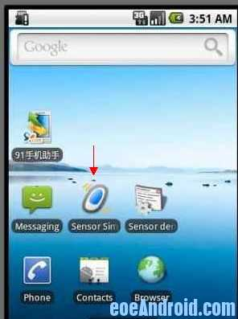
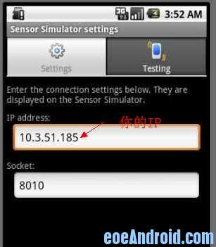
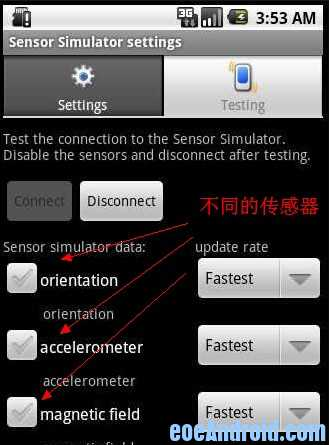
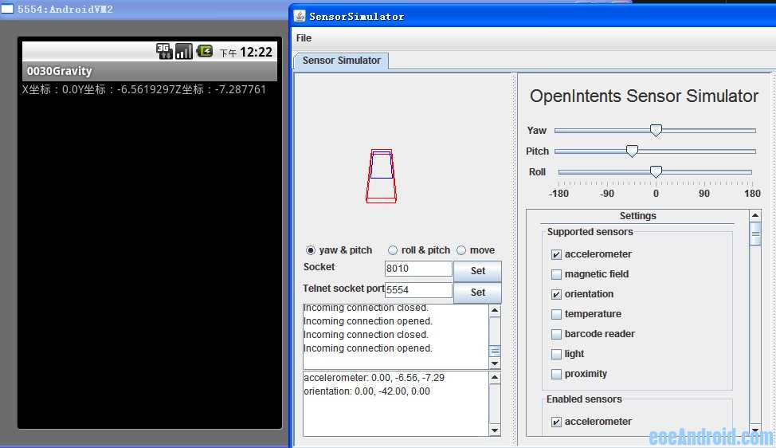

利用SensorSimulator进行传感器的模拟
当没有android手机的开发者进行传感器开发的时候，遇到了一个问题，没有真机，怎么进行测试。
答案是：用SensorSimulator进行模拟（它是一个开源的项目）。
先看看图：




1，先下载sensorsimulator-1.1.1.zip
2，解压缩，解压后我们会看到它的下面有几个文件夹，有个lib的文件夹，那个就是我们要的lib，在我们的项目下导入这个jar包
3，接下来是代码部分，代码部分其实变化不大，private SensorManagerSimulator mSensorManager;利用这个调用sensor就行了，代码方面就是我们要利用那个lib包的方法调用service，从而使模拟器监听某个端口，而改变xyz。试试吧，挺好用的。 当然，前期测试阶段用模拟器测试要是用SensorManagerSimulator 这个类，如果是放到真机上跑，还是要是用SensorManager这个类的。毕竟是模拟嘛。在你项目中用到的Sensor，SensorManager，SensorEventListener等类，在导入的jar包里面都有，注意在模拟的时候都要导入该jar包中的，不要导入android提供的。不然会报错滴。
4，将解压出来的bin目录下的SensorSimulatorSettings.apk安装到模拟器上进行参数的配置。
5，将你自己的DEMO部署到上面，就可以看到你想要的结果啦。
看代码：（没贴布局文件的代码，很简单，就一个TextView）
import org.openintents.sensorsimulator.hardware.Sensor;import org.openintents.sensorsimulator.hardware.SensorEvent;
import org.openintents.sensorsimulator.hardware.SensorEventListener;
import org.openintents.sensorsimulator.hardware.SensorManagerSimulator;
import android.app.Activity;
import android.hardware.SensorManager;
import android.os.Bundle;
import android.widget.TextView;
public class Gravity extends Activity {
private TextView view;
private SensorManagerSimulator manager;
private MyListener myListener;
@Override
public void onCreate(Bundle savedInstanceState) {
super.onCreate(savedInstanceState);
setContentView(R.layout.main);
view = (TextView) findViewById(R.id.data);
// 得到SensorManagerSimulator对象。
manager = SensorManagerSimulator.getSystemService(this, SENSOR_SERVICE);
// 下面这句是必须的，不写没结果
manager.connectSimulator();
myListener = new MyListener();
manager.registerListener(myListener,
manager.getDefaultSensor(Sensor.TYPE_ACCELEROMETER),
SensorManager.SENSOR_DELAY_FASTEST);
}
class MyListener implements SensorEventListener {
@Override
public void onAccuracyChanged(Sensor arg0, int arg1) {
}
// 这个方法是在传感器接收的数据发生变化的时候的回调函数，将数据传到了SendorEvent对象里。
@Override
public void onSensorChanged(SensorEvent event) {
view.setText("X坐标：" + event.values[0] + "Y坐标：" + event.values[1]
+ "Z坐标：" + event.values[2]);
}
}
@Override
protected void onPause() {
super.onPause();
// 传感器使用起来比较耗电，如果当前的activity不可见应该解除绑定
manager.unregisterListener(myListener);
}
}